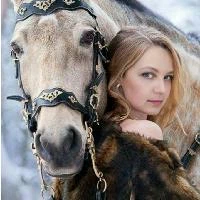

01✳
Индивидуальная
консультация
Пространство для личного разговора, исследования переживаний, вопросов и внутренних опор.
Психология, творчество и бережный разговор о важном. Пространство, где можно искать опору, новые смыслы и собственный голос.

Образ из моего профиля в «Шедевруме»Я психолог, писатель, наставник и аромапсихолог. Мне близок мир, в котором слово, образ и внимательное отношение к себе помогают человеку открывать новое.
В моих публикациях переплетаются психология, творчество, личные истории, блоготерапия и темы профессионального развития. Здесь я собираю направления своей работы, статьи, книги и изображения.
Несколько направлений, о которых я рассказываю в своей практике и публикациях. Формат встречи и актуальные условия обсудим лично.
Пространство для личного разговора, исследования переживаний, вопросов и внутренних опор.
Работа со словом, внутренними ограничениями, самовыражением и развитием авторского голоса.
Знакомство с метафорами, ассоциациями и образными практиками, о которых я пишу.
Иногда, чтобы начать новую главу,слово · выбор · движение
достаточно позволить себе её написать.
Книга, творческая группа и авторские инструменты — точки входа в большой разговор о себе и своём пути.
Авторская книга о письме, самовыражении и работе с внутренними преградами на пути к собственному голосу.
О книге на Литрес ↗Творческая группа для тех, кто хочет писать, делиться идеями и находить свой голос.
Образные материалы и творческие практики — ещё одна грань работы со смыслами и ассоциациями.
Психология, отношения, писательство и творчество. Выберите интересную тему — и найдите свою статью.
Александр Деревяшкин о книге Анжелики «Блоготерапия». Два отзыва, оставленные на Литрес.
«Глубокая сила мысли и искренность в книге».
«Она многому меня научила! Это интересно и важно!»
Картины из галереи Анжелики в «Шедевруме». Живописные истории, настроения и внутренние миры — ещё один способ говорить о человеке.
Не нужно заранее формулировать всё идеально. Выберите интересующее направление и отправьте короткую заявку в Telegram.